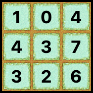
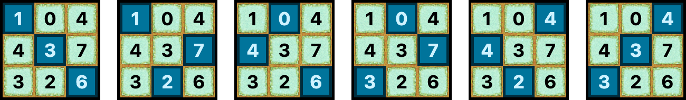
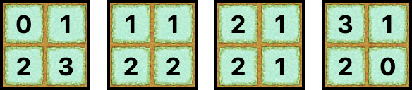

Kota Bogor terkenal sebagai kota hujan karena curah hujannya yang tinggi. Oleh karena itu, Pak Dengklek mempunyai ide untuk menanam tanaman ajaib yang tumbuh jika terkena hujan.
Lahan Pak Dengklek berbentuk persegi yang berisi $N \times N$ petak, dengan $N$ baris (dinomori dari $1$ sampai $N$) dan $N$ kolom (dinomori dari $1$ sampai $N$). Petak yang terletak pada baris ke-$i$ dan kolom ke-$j$ dinotasikan sebagai petak $(i, j)$. Untuk masing-masing petak, Pak Dengklek bisa memilih untuk menanam nol atau lebih benih tanaman ajaib di petak itu.
Namun, terdapat matriks $A$ yang berukuran $N \times N$ yang menotasikan batasan-batasan berikut:
Hujan yang bisa terjadi pada lahan Pak Dengklek memiliki sifat yang unik. Hujan yang terjadi akan menghujani tepat $N$ petak dengan memenuhi kedua syarat berikut:
Walaupun diketahui syarat-syarat di atas, tepatnya petak yang mana saja yang akan terkena hujan tidak diketahui.
Jika terjadi hujan, maka semua benih yang ditanam di petak-petak yang terkena hujan akan tumbuh menjadi tanaman dewasa.
Pak Dengklek ingin menanam benih-benih tanaman ajaib supaya bagaimanapun hujan menghujani lahan, total banyaknya benih yang tumbuh menjadi tanaman dewasa selalu sama.
Hitunglah banyaknya cara berbeda Pak Dengklek bisa menanam benih-benih tersebut!
Karena jawabannya bisa sangat besar, keluarkan jawabannya modulo $1\,000\,000\,007$.
Tentu saja, apabila tidak ada cara menanam benih yang memenuhi, banyaknya cara adalah $0$.
Khususnya, jika terdapat tak hingga banyaknya cara berbeda, keluarkan -1.
Catatan: dua cara penanaman dikatakan berbeda jika dan hanya jika ada setidaknya satu petak $(i, j)$ yang ditanami dengan banyaknya benih yang berbeda pada kedua cara tersebut.
Masukan diberikan dalam format berikut:
N A1,1 A1,2 … A1,N A2,1 A2,2 … A2,N ︙ ⋱ ︙ AN,1 AN,2 … AN,N
Keluarkan sebuah baris berisi sebuah bilangan bulat yang menyatakan banyaknya cara berbeda Pak Dengklek bisa menanam benih-benih tersebut yang memenuhi syarat, modulo $1\,000\,000\,007$.
Jika terdapat tak hingga banyaknya cara berbeda, keluarkan -1.
3 -1 0 -1 4 -1 7 3 -1 -1
4
Berikut adalah salah satu cara menanam benih yang memenuhi.

Hujan bisa menghujani lahan dalam $6$ cara berbeda. Jika Pak Dengklek menanam benihnya mengikuti ilustrasi di atas, bagaimanapun hujan menghujani lahannya, total banyaknya benih yang tumbuh menjadi tanaman dewasa selalu $10$.

2 -1 1 2 -1
4
Berikut adalah $4$ cara berbeda untuk menanam benih yang memenuhi syarat.

2 -1 -1 -1 -1
-1
Terdapat tak hingga banyaknya cara berbeda untuk menanam benih yang memenuhi syarat, sehingga Anda perlu mengeluarkan -1.
2 2 6 5 265
0
Tidak ada cara menanam benih yang memenuhi.